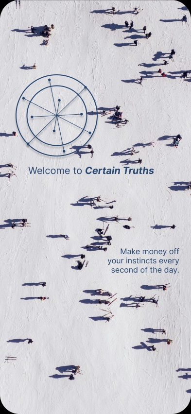
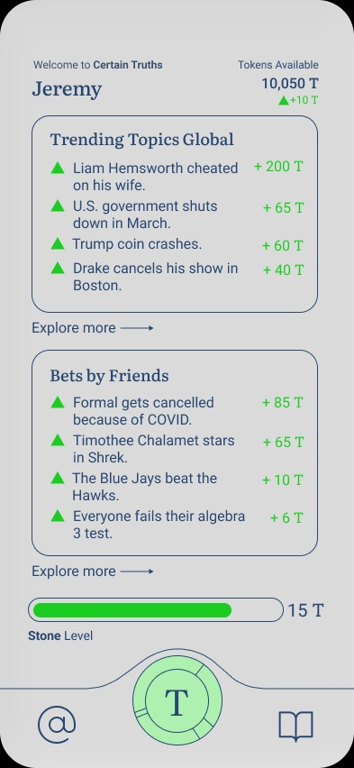
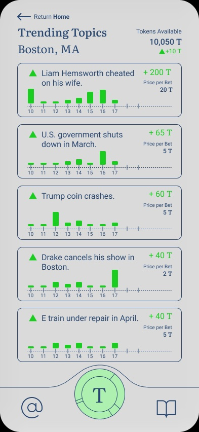
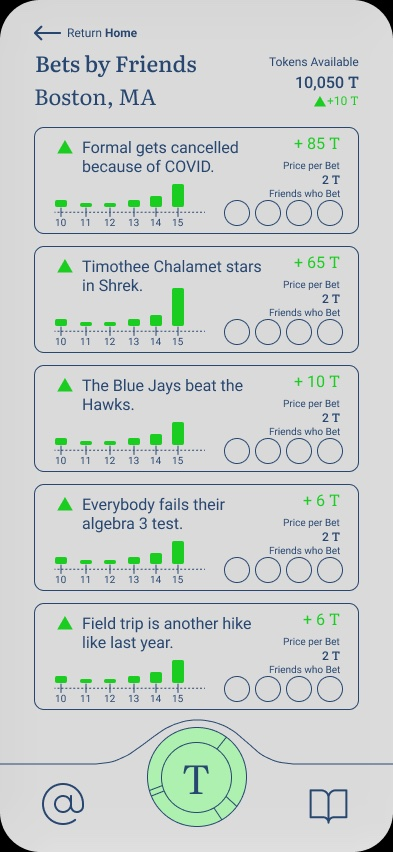
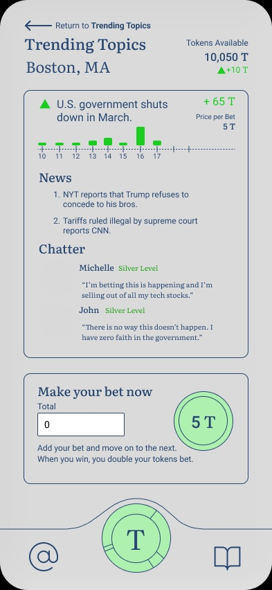
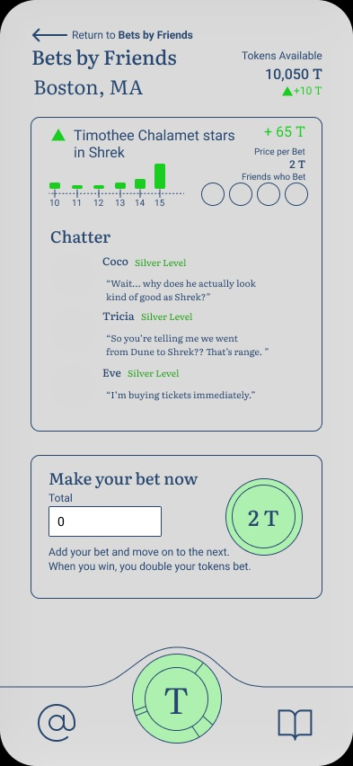

UX Design · Anthropology · Ethics of Interface Design · 2024
This project was created for an anthropology course examining the ethics of attractive interface design. The assignment asked: what does a maximally persuasive interface look like — and at what cost? Rather than critique an existing product, I designed one from scratch, building a speculative real-money prediction app called Certain Truths.
The tagline — "Make money off your instincts every second of the day" — frames betting not as gambling but as an expression of intelligence and cultural awareness. The goal of the design was to make that framing feel credible, familiar, and desirable, and then to use the artifact as a lens for examining how those feelings are manufactured.
Certain Truths is a critical design artifact — built not to be deployed, but to make visible the mechanics that persuasive interfaces use to manufacture engagement, urgency, and habitual return.
Onboarding

Welcome

Home feed

Trending Topics

Bets by Friends

Topic detail — Trending

Topic detail — Friends
Users earn tokens by betting on whether trending news events or social predictions will come true. Topics are organized into two feeds: Trending Topics Global (broader news and cultural events) and Bets by Friends (localized, socially-surfaced predictions within a user's network). Each topic shows a price-per-bet in tokens, a mini price chart tracking betting activity over time, and the number of friends who have already bet — making every decision feel socially charged and time-sensitive.
Each topic detail page includes a Chatter section displaying comments from other bettors, adding social proof and emotional color to each prediction. When you win, you double your tokens. Tokens accumulate toward a leveling system — Stone, Silver, and beyond — displayed on the home screen with a progress bar.
Each design decision in Certain Truths was deliberately chosen to demonstrate a specific persuasive or manipulative mechanism. The analysis below maps interface elements to the behavioral principles they exploit.
Token multipliers tied to bet outcomes mirror the intermittent reinforcement schedule found in slot machines — the most powerful behavioral conditioning pattern. Winning doubles tokens; losing costs only what you staked, encouraging continued small bets.
The "Friends who Bet" counter on every topic card creates social proof — if people you know have already bet, abstaining feels like missing out. The Bets by Friends feed surfaces this signal most intensely, centering the activity of your immediate social network.
Topics are drawn directly from real news events (government shutdowns, celebrity news, local incidents). Framing bets around real events conflates gambling with political and cultural engagement — the app suggests your bet is an expression of informed judgment, not a wager.
User comments on each topic create an emotional atmosphere before a bet is placed. Seeing peers express excitement, certainty, or humor lowers resistance and frames participation as social belonging rather than financial risk.
Each topic includes a mini chart showing betting volume over time — mimicking stock market UX. A spike in activity signals that something is happening right now, manufacturing urgency even when the underlying prediction may take days or weeks to resolve.
The token progress bar on the home screen creates a near-completion illusion — the bar is always partially filled, always implying that the next level is close. Gamification converts financial behavior into a sense of personal advancement.
The onboarding sequence ("Welcome to Certain Truths — Make money off your instincts") positions betting as a skill tied to self-knowledge rather than luck. This attribution error is the app's most foundational persuasive claim.
Certain Truths demonstrates how mainstream interface design conventions — progress bars, social feeds, charts, community comments — become ethically charged when applied to financial behavior. None of the individual elements are inherently dark; it is their combination, and the context in which they operate, that constitutes the manipulation.
The project raised a question I found difficult to resolve: at what point does attractive design become exploitative design? The same interaction patterns that make a productivity app engaging make a gambling app addictive. The difference lies not in the visual language but in what behavior is being reinforced — and who benefits from that reinforcement.